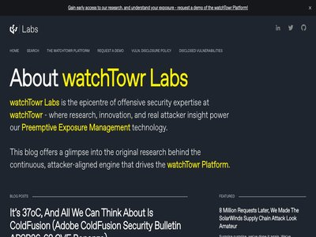
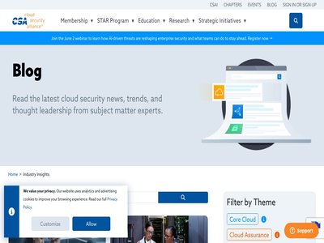
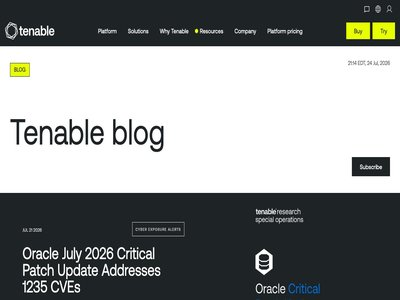

October 10, 2026 · 7 articles

The Third-Party Agent Problem: Why Security Built for AI You Chose Misses the Agents You Didn't
October 10, 2026
In environments studied for the 2026 State of Agent Security Report, roughly 1,280 third-party products now embed AI. About 282 of them sit behind single sign-on. The other thou... (The Hacker News)

Insider Cyber Extortion Plot Against Industrial Firm Lands Engineer in Prison
October 10, 2026
The former core infrastructure engineer deleted admin accounts, reset hundreds of passwords, and demanded 20 bitcoin to spare the company’s servers. The post Insider Cyber Extor... (SecurityWeek)

Two characters open up a world of typosquatting opportunities in Chromium browsers
October 10, 2026
Attackers abusing rare Cyrillic and Latin letters to impersonate popular websites (The Register - Security)
Anthropic Cuts Live Internet Access for Internal AI Tests After Claude Exploits Injection Flaws
October 10, 2026
Anthropic on Friday said it's cutting off live internet access for all its internal evaluations following the discovery of new incidents in which its artificial intelligence (AI... (The Hacker News)

Why TLP should not replace your internal information classification, (Sat, Oct 10th)
October 10, 2026
The Traffic Light Protocol (TLP)[1], which is now in its second incarnation, is a wonderful standard that enables one to easily communicate whether information may be shared fur... (SANS ISC)

US Sentences Empire Market Co-Creator Over $430 Million Criminal Marketplace
October 10, 2026
Empire Market co-creator Raheim Hamilton was sentenced to 40 years in prison for running a dark web marketplace linked to $430 million in illegal trades. The case against Empire... (Security Affairs)

FBI Arrests Founder of Ransomware Negotiation Firm
October 10, 2026
Agents with the Federal Bureau of Investigation (FBI) on Thursday arrested the co-founder of a Canadian cybersecurity firm in connection with an investigation into the ShinyHunt... (KrebsOnSecurity)
October 09, 2026 · 57 articles
AWS AgentCore security undone by prompt requesting credentials
October 09, 2026
Tokens transmitted in metadata, weak VM isolation, and expansive permissions make hacking a lot easier (The Register - Security)
Credential-Stealing GitHub Actions Workflows Planted in Tens of Thousands of Repositories
October 09, 2026
Cybersecurity researchers have disclosed details of an ongoing credential-theft campaign that has compromised two high-profile open-source maintainer accounts to push a maliciou... (The Hacker News)
Germany Arrests Suspected Qilin Ransomware Leader After Japan Detention
October 09, 2026
Japan helped extradite a Russian suspect linked to Qilin ransomware to Germany, but the gang continued attacking victims after his arrest. Germany has arrested a Russian nationa... (Security Affairs)

CVE-2026-13769 - Insecure file permissions in AWS CLI
October 09, 2026
(AWS Security Bulletins)
CVE-2026-108096: Improper authorization in query resolvers for SQL-backed models in AWS Amplify API Category
October 09, 2026
Bulletin ID: 2026-133-AWS Scope: AWS Content Type: Important (requires attention) Publication Date: 10/09/2026 11:00 AM PDT Description: AWS Amplify API Category is a CDK Constr... (AWS Security Bulletins)
FBI Arrests Another ShinyHunters Suspect Reportedly Involved in Its Jobs Portal Hack
October 09, 2026
The FBI has arrested another suspected co-conspirator of ShinyHunters, FBI Director Kash Patel said on October 9 in a post on X. ShinyHunters is the extortion group that said in... (The Hacker News)

FBI touts another ShinyHunters arrest in response to data breach
October 09, 2026
“We will continue to work closely with our partners to disrupt what’s left of the ShinyHunters group and their associates, no matter where they operate," FBI Director Kash Patel... (The Record)

AI Agent Security: Six Controls From Nine Real Incidents
October 09, 2026
An AI agent runs with your credentials and acts before you can stop it. Nine incidents show what that costs. Six controls limit the damage: sandbox the agent, scope its credenti... (GitGuardian Blog)
Attackers Exploit AhsayCBS Flaws to Deploy XMRig Miners Disguised as Microsoft Edge
October 09, 2026
Threat actors have been observed exploiting two recently disclosed flaws in the AhsayCBS backup utility to seize control of affected devices and deploy web shells and XMRig cryp... (The Hacker News)

Max severity SonicWall SMA1000 flaw now exploited in attacks
October 09, 2026
Attackers are exploiting a maximum-severity vulnerability in SonicWall SMA1000 appliances (CVE-2026-102255) that was patched on Tuesday, three days ago. [...] (BleepingComputer)

Anthropic offers free AI security scans to open-source maintainers
October 09, 2026
Anthropic’s OSS Scanner is a new, free service that uses the company’s strongest AI models to find security vulnerabilities in open-source software. Maintainers who opt in recei... (Help Net Security)
FBI disrupts Flax Typhoon hacking tools used in global cyberattacks
October 09, 2026
The FBI seized seven domains used to operate Microscan and FishHub, two hacking tools linked to Chinese state-sponsored hackers known as Flax Typhoon that were used to target cr... (Help Net Security)
Citrix warns admins to patch new NetScaler RCE flaw immediately
October 09, 2026
Citrix has warned IT administrators to patch systems immediately against a new critical vulnerability affecting NetScaler ADC networking appliances and NetScaler Gateway secure... (BleepingComputer)
Three Teams Demonstrate Remote Hacks of Fully Patched Google Pixel 10 at Pwn2Own
October 09, 2026
Three research teams broke into Google's Pixel 10 on October 8 at Pwn2Own Ireland, a hacking contest in Cork whose rules require every target to be fully patched. The contest pa... (The Hacker News)
Citrix Urges Immediate Patching of Critical NetScaler Vulnerability
October 09, 2026
The security defect, tracked as CVE-2026-107406, could lead to remote code execution or denial-of-service. The post Citrix Urges Immediate Patching of Critical NetScaler Vulnera... (SecurityWeek)
OpenAI Fires 3 Safety Researchers in Dispute Over AI Risks
October 09, 2026
The ChatGPT maker said the researchers "violated clear policies on handling sensitive information.” The post OpenAI Fires 3 Safety Researchers in Dispute Over AI Risks appeared... (SecurityWeek)

ASOS Breach Reveals the Risks in Customer-Facing SaaS
October 09, 2026
The attack on the British retailer shows that compromising a single identity can lead to much deeper penetration of the corporate network. (Dark Reading)
AI Scramble Drives Cybersecurity M&A Boom
October 09, 2026
Welcome to another gangbuster year for strategic M&A activity in cyber, with 117 deals announced in the latest quarter. What's different: Many of the buyers are not your typical... (Dark Reading)
CVE-2026-13762 and CVE-2026-13763 - Issue with HTTP/2 multi-frame request body inspection in AWS WAF
October 09, 2026
(AWS Security Bulletins)
Issue with containerd CRI Plugin - CVE-2026-50195, CVE-2026-53488, CVE-2026-53492, CVE-2026-53489, CVE-2026-47262
October 09, 2026
(AWS Security Bulletins)
CVE-2026-12957 and CVE-2026-12958 - Issues in Language Servers for AWS and Amazon Q Developer Plugins
October 09, 2026
(AWS Security Bulletins)
CVE-2026-13760 - OS Command Injection in NodejsFunction Docker Bundling in aws-cdk-lib
October 09, 2026
(AWS Security Bulletins)
CVE-2026-12043 - Heap double-free in AWS Common Runtime aws-c-http
October 09, 2026
(AWS Security Bulletins)
CVE-2026-10740 - Excessive memory allocation in s2n-quic
October 09, 2026
(AWS Security Bulletins)

Death By A Thousand PaperCuts (PaperCut Pre-Auth RCE Chain and Patch Bypasses WT-2026-0141-0144/CVE-2026-82077/CVE-2026-82078/CVE-2026-81578)
October 09, 2026
Before we begin, yes - it's confusing. There are more vulnerabilities with watchTowr IDs in this blog post than there are CVE IDs (assigned by PaperCut), due to PaperCut bundlin... (watchTowr Labs)
P7 DarkSword iOS Exploit Kit Adds Crypto Wallet Data Theft and Remote Commands
October 09, 2026
Cybersecurity researchers have disclosed details of a previously unseen variant of the DarkSword iOS exploit kit called P7 DarkSword. "Compared with the variants we usually obse... (The Hacker News)
Security Threats Don't Stop at the Office: Why Executives' Families Need Training, Too
October 09, 2026
Those closest to executives must match their security postures because the weakest link in a family can become the entry point for attacks. (Dark Reading)
Hundreds of thousands impacted by data breach at biosensor firm iRhythm
October 09, 2026
A company known for wearable cardiac sensors, iRhythm, has begun notifying states of the impact of a data breach from the summer. (The Record)

Wikimedia Says Rogue AI Agents Abused its Platforms
October 09, 2026
Wikimedia says OpenAI agents performed unauthorized actions on its platforms, including edits to wikis (Infosecurity Magazine)
Belarusian hacktivists admit to 2023 breach of Russian state healthcare network
October 09, 2026
The Belarusian Cyber Partisans concurred with Russian research that they indeed spent months inside the network for the Moscow Department of Health. (The Record)
TP-Link Sued by Four More U.S. States Over Router Security and China Ties
October 09, 2026
Four more U.S. states sued router maker TP-Link Systems on October 6, bringing the total to five, with Texas filing a suit in February. Florida, Iowa, Montana and Nebraska alleg... (The Hacker News)

Introducing on-demand CPU and memory profiling with flamegraphs for Workers and Durable Objects
October 09, 2026
On-demand CPU and memory profiling for Cloudflare Workers and Durable Objects is now available. Now you can generate interactive flamegraphs directly in production to quickly tr... (Cloudflare Blog)
Social Engineering AI Agents: The New BEC for 2026
October 09, 2026
As AI agents gain authority over business systems, attackers can manipulate them like business email compromise (BEC) victims. (Dark Reading)
Researchers Publish Working Exploit for Pre-Auth AnyDesk Linux Flaw That Gives Root Access
October 09, 2026
Security researchers have published a full working exploit for a pre-authentication remote code execution flaw in AnyDesk Linux that gives attackers root access before anyone ap... (The Hacker News)
Deno is joining Cloudflare
October 09, 2026
The Deno team is joining Cloudflare to radically simplify self-hosting Workers and Durable Objects, so developers can use the same primitives in more places. (Cloudflare Blog)
High-severity NVIDIA vulnerability lets unauthenticated attackers crash GPU monitoring
October 09, 2026
Hundreds of internet-exposed graphics processing unit (GPU) servers were open to a high-severity flaw in NVIDIA’s DCGM Exporter (CVE-2026-47483) that lets unauthenticated attack... (Help Net Security)
Flax Typhoon Exploits Five Flaws as CISA Sets October 11 Deadline for Federal Agencies
October 09, 2026
The U.S. Cybersecurity and Infrastructure Security Agency (CISA) on Thursday added five security flaws to its Known Exploited Vulnerabilities (KEV) catalog, following their abus... (The Hacker News)
In Other News: AI Used in Korean Bank Breaches, Poem-Guided Botnet, Empire Admin Gets 40 Years
October 09, 2026
Noteworthy stories that might have slipped under the radar: Tensorlake npm SDK compromised, Empire Market co-founder gets 40 years, exposed NVIDIA GPU monitors leak telemetry. T... (SecurityWeek)
Q3 2026 Sets New Record for Ransomware Attacks
October 09, 2026
Comparitech observed 2627 claimed ransomware attacks in Q3, with critical sectors like finance, technology, education and healthcare experiencing significant increases (Infosecurity Magazine)
Google Domains Impacted by Recent ccTLD Hijacks
October 09, 2026
Hackers hijacked the .gh, .sl, and .as ccTLDs and obtained HTTPS certificates for several Google domains. The post Google Domains Impacted by Recent ccTLD Hijacks appeared first... (SecurityWeek)
The AI Velocity Paradox: Why Security Is Decades Behind AI Ambition
October 09, 2026
As enterprises race to deploy autonomous AI agents to accelerate business, a new report reveals they are tethered to security architectures built for a different era. The "Horiz... (The Hacker News)

ASOS breach update: Hackers stole customer details and shopping searches
October 09, 2026
Stolen ASOS data includes shopping searches as well as personal details, so customers should watch out for convincing phishing messages. (Malwarebytes Labs)
Microsoft: Outdated Windows devices will stop receiving security updates
October 09, 2026
Microsoft says devices running unsupported versions of Windows will stop receiving security updates after next year's Windows Update certificate rotation. [...] (BleepingComputer)
UK and Allies Warn of Cyber Threat from China’s Integrity Technology Group
October 09, 2026
The UK, US and allies have issued an alert detailing malicious activity linked to China’s Integrity Technology Group (Infosecurity Magazine)
Pre-Baked Firmware Malware Hits Budget Android Devices in 150+ Countries
October 09, 2026
Midnight Mimosa is the name given to a malware campaign primarily running preinstalled on low-cost Android devices. The post Pre-Baked Firmware Malware Hits Budget Android Devic... (SecurityWeek)
AI Training Critical as Governance Challenges Grow
October 09, 2026
As AI adoption accelerates, ISACA is expanding its certification portfolio with a governance-focused credential designed to help professionals manage AI securely (Infosecurity Magazine)
Product showcase: SimpleLogin keeps your email address private with aliases
October 09, 2026
SimpleLogin is an email alias service from Proton that forwards messages to an existing mailbox. Users create addresses for registrations, purchases, and correspondence, giving... (Help Net Security)
Major AI Firms Pledge Data Protection Changes Following UK Privacy Watchdog Push
October 09, 2026
Ten leading AI firms have committed to make data protection improvements following a call for evidence by the UK’s Information Commissioner's Office (Infosecurity Magazine)
AI-Driven tool ARTEX used in attacks against South Korean Banks
October 09, 2026
CrowdStrike analyzes open directories left by an attacker who used the ARTEX AI pentest tool and LLMs to breach South Korean financial firms. CrowdStrike published a research on... (Security Affairs)
October 2026 Patch Tuesday forecast: Time for an Office cleanup
October 09, 2026
September 2026 Patch Tuesday set an all-time record with 973 CVEs addressed across the Microsoft portfolio. We’re only four months into the Patch Apocalypse and everyone seems t... (Help Net Security)
What the BPFDoor backdoor tells us about attacks on the network edge
October 09, 2026
A backdoor that makes no noise is hard to catch, and that’s the point of BPFDoor. The Linux malware waits for a special “magic packet” before it acts. In this interview with Hel... (Help Net Security)
Hackers get $1,262,000 for 98 zero-days at Pwn2Own Ireland
October 09, 2026
The Pwn2Own Ireland 2026 hacking contest has concluded, with hackers collecting $1,262,000 in rewards after exploiting 98 zero-day flaws. [...] (BleepingComputer)
Thousands of wind and solar park systems sit exposed on the internet across Europe
October 09, 2026
Modat and NCSC-NL, the Dutch government’s cybersecurity center, found 8,547 internet-facing systems at wind farms and solar parks in 35 countries in and around the EU that shoul... (Help Net Security)
PCI SSC calls for human approval of AI agent actions involving cardholder data
October 09, 2026
The PCI Security Standards Council (PCI SSC) has published Security Considerations for AI Systems, guidance covering the protection of data supplied to AI systems in payment env... (Help Net Security)
Companies want autonomous IT operations but hesitate to let AI act alone
October 09, 2026
Ninety percent of companies want to move toward autonomous IT operations over the next two years, with agentic AI, software that plans and carries out multi-step tasks on its ow... (Help Net Security)
Formula Predicts When AI Chatbots Are at Risk of Turning Bad
October 09, 2026
Researchers from George Washington University have published a paper examining whether the time and cause of AI going rogue can be predicted. The post Formula Predicts When AI C... (SecurityWeek)

Recorded Future Introduces AI Infrastructure Indicator Lists, Strengthening AI Governance
October 09, 2026
Recorded Future's new AI Infrastructure Indicator Lists help security teams find shadow AI, enforce policy, and prevent data loss. (Recorded Future)
October 08, 2026 · 54 articles
CVE-2026-10591 - Kiro IDE Insufficient File Write Restrictions to Execution-Sensitive Paths
October 08, 2026
(AWS Security Bulletins)

Malicious npm Campaign “MALFEX” Delivers RAT and Stealer via Eight Packages with 40,000+ Downloads
October 08, 2026
Executive Summary A supply-chain attack targeting npm developers has been active since August 2023, distributing eight malicious packages that collectively received over 40,767... (Orca Security Blog)
MonsterCloud Owner Charged With Secretly Paying Ransomware Demands
October 08, 2026
MonsterCloud owner Zohar Pinhasi allegedly paid ransomware demands behind clients’ backs, then charged them millions for the supposed recovery. Zohar Pinhasi, the owner of Flori... (Security Affairs)
Wazza Phishkit Targets Banking, Government, and Manufacturing Across the US, EU, and Australia
October 08, 2026
Phishing kits are no longer limited to copying a familiar login page and waiting for a victim to enter credentials. Attackers are increasingly building filtering, session manage... (The Hacker News)
CVE-2026-11400 and CVE-2026-11401
October 08, 2026
(AWS Security Bulletins)
CVE-2026-8838 - Remote Code Execution in amazon-redshift-python-driver
October 08, 2026
(AWS Security Bulletins)
CVE-2026-8686 - Heap out-of-bounds read in coreMQTT MQTT5 property parsing
October 08, 2026
(AWS Security Bulletins)

Your Roadmap to the Frontier Ready Journey
October 08, 2026
In April 2026 the Cloud Security Alliance, working with our partners SANS and RSAC, first published The “AI Vulnerability Storm”: Building a “Mythos-ready” Security Program that... (Cloud Security Alliance)
Atlassian Vulnerability Comes Under Attack Hours After Details Go Public
October 08, 2026
Threat actors are exploiting CVE-2026-21589, a critical Atlassian flaw that can expose sensitive files across multiple Data Center products. Threat actors have started exploitin... (Security Affairs)
Shai-Hulud worm makes jump to AI infrastructure with Tensorlake compromise
October 08, 2026
Credential-stealing malware detected within minutes of npm release, but impact remains unknown (The Register - Security)
ASOS Confirms Data Breach Linked to Stolen Employee Credentials
October 08, 2026
The ASOS hack comes from the compromise of agentic marketing platform Simon AI, said the attackers (Infosecurity Magazine)
Russia-Aligned UAC-0099 Evolves MATCHBOIL Malware
October 08, 2026
Russia-aligned UAC-0099 has steadily upgraded its MATCHBOIL downloader since 2024 (Infosecurity Magazine)

MATCHBOIL: New tricks, same old evil intentions
October 08, 2026
ESET Research catalogs the changes of UAC-0099’s MATCHBOIL downloader from 2024 to 2026 (ESET WeLiveSecurity)

CrowdStrike and Anthropic Give Critical Infrastructure Defenders the AI Advantage
October 08, 2026
(CrowdStrike Blog)
'AgentCorruption' Puts AWS Environments At Risk With Single Prompt
October 08, 2026
A now-patched vulnerability in AWS Bedrock AgentCore could allow an attacker to use one AI chatbot to take over an organization's entire fleet. (Dark Reading)
Lawmakers warn Google could expose Spirit Airlines data in $10 million AI training deal
October 08, 2026
The proposed sale would include about 100 million emails, 500 million Microsoft Teams messages, employment contracts, employee and timecard records and payroll and tax informati... (The Record)
Ransomware attack disrupts Japan's IDCF Cloud used by govt clients
October 08, 2026
IDC Frontier, a major Japanese cloud and digital infrastructure company, disclosed that its IDCF Cloud service was targeted in a ransomware attack that caused an outage at a dat... (BleepingComputer)

Suspected TraderTraitor Group Uses Trojanized Terraform Provider to Deliver Cross-Platform Malware
October 08, 2026
IntroductionIn July 2026, Zscaler ThreatLabz uncovered a campaign linked to TraderTraitor (also tracked as Jade Sleet, UNC4899, Pressure Chollima, and Slow Pisces), an advanced... (Zscaler ThreatLabz)
Venezuelan Cartel's Malware Honcho Nabbed for ATM Jackpotting
October 08, 2026
The first cybercriminal to ever make the FBI's "10 Most Wanted Fugitives" list allegedly infused Tren de Aragua's violent criminal operations with cash. (Dark Reading)

StepSecurity Now Inventories AI Agent Skills in Your GitHub Repositories and on Developer Machines
October 08, 2026
Inventory the AI agent skills on developer machines and in your GitHub repositories: which agent loads them, what they can execute, and where they came from. (StepSecurity Blog)
Hunt.io Finds New Infrastructure Of BraZetsu Access Broker Months Before Disclosure
October 08, 2026
Hunt.io traced BraZetsu ‘s infrastructure and found that hosting patterns and certificate data remained useful after published IOCs became outdated. Group-IB researchers publish... (Security Affairs)
Russian Spies Give 'MatchBoil' Malware a Stealthy Facelift
October 08, 2026
Cyber-espionage actor UAC-0099 has been steadily refining its flagship dropper in campaigns targeting Ukrainian organizations. (Dark Reading)

Making sure the checks get printed
October 08, 2026
Pierre's debut newsletter explores the messy, real-world side of risk management and how to keep vital systems running when a perfect patch isn't an option. (Cisco Talos)
OpenAI says Iran, Russia used AI journalists, think tanks to influence Western media
October 08, 2026
The two campaigns were rated 4 and 5 out of 6 for severity, the first time OpenAI has reported what it considers a high-impact influence campaigns. The post OpenAI says Iran, Ru... (CyberScoop)
Gremlin now uses AI to break distributed systems faster
October 08, 2026
If there's one thing AI can do well, it's failing more quickly than the average SRE (The Register - On-Prem)
Reconstructing AI Agent Activity: Two New Scripts for Forensic Review, (Thu, Oct 8th)
October 08, 2026
We just did a major update to FOR577 and added a lot of new material on day 5 about investigating AI usage in incident response. In the new material we dicsuss 8&#;x26;#;xc2;&#;... (SANS ISC)
Crypto thief who splurged on gold grills sentenced in London
October 08, 2026
A 25-year-old man who helped steal nearly $260,000 in cryptocurrency through a SIM-swapping fraud scheme was sentenced to two and a half years in prison at a London court. (The Record)
Cisco warns of critical flaws allowing Nexus switch takeover
October 08, 2026
Cisco released security advisories for five critical vulnerabilities in its NX-OS data center network operating system that could be exploited to run arbitrary code with root pr... (BleepingComputer)
Fighting GenAI with GenAI: The New Email Security Landscape
October 08, 2026
SPONSORED FEATURE: Old attack, new protections (The Register - Security)
Security Awareness Training Isn’t Dead, but It Needs a Rethink
October 08, 2026
All enterprises conduct security awareness training for their employees. But whether this has tangible benefits is debatable. The post Security Awareness Training Isn’t Dead, bu... (SecurityWeek)
OAuth grants pile up faster than you can review them. Here's how to keep up.
October 08, 2026
OAuth grants create data highways between SaaS apps, AI agents, and other tools. And, they are multiplying faster than any security team can review them. As the recent Klue brea... (BleepingComputer)
Bridging technical depth and usability: The story behind Radar’s redesign
October 08, 2026
We redesigned Cloudflare Radar to make real-time global traffic and outage data accessible to a wider audience - including journalists, less technical researchers, and everyday... (Cloudflare Blog)
Authorities seize sites selling hacked, stolen intimate images of 17,000 women and girls
October 08, 2026
The FBI and French law enforcement have seized two websites that sold hacked and stolen sexually explicit images and videos of young women and girls, and arrested their suspecte... (Help Net Security)

Inside the Exchange Inspector: How Tenable uses OpenAI GPT cyber models to review open-source AI agents
October 08, 2026
Community-built AI agents, skills, and MCP servers are landing in SOC workflows fast. Here’s what the Exchange Inspector tests before a listing earns its vetted tag on the Cyber... (Tenable Blog)
US Seeks Alleged Chinese Hafnium Hacker With $10 Million Reward
October 08, 2026
Zhang Yu was charged alongside Xu Zewei, who was extradited from Italy to the US in April 2026. The post US Seeks Alleged Chinese Hafnium Hacker With $10 Million Reward appeared... (SecurityWeek)
YouTubers targeted with fake sponsorships and “channel verification” phishing
October 08, 2026
Scammers are going after YouTube creators’ Google accounts by posing as a brand looking for sponsorship partners. By sending out personalized emails that reference a creator’s o... (Help Net Security)
Anthropic’s new budget model gets much better at ignoring hidden commands
October 08, 2026
Anthropic’s Claude Haiku 5.5 model, designed for quick, repetitive workloads and speed-sensitive tasks, is now better at finding vulnerabilities and writing exploits than its pr... (Help Net Security)
UK and Germany team up against Russian cyberattacks as Brexit rethink looms
October 08, 2026
Security pact promises information-sharing and coordinated disruption, but offers little detail on agencies or funding (The Register - Security)
Rein Security Raises $25 Million to Guard AI Agents at Runtime
October 08, 2026
The cybersecurity startup will invest in product innovation, agentic research, and employee base expansion. The post Rein Security Raises $25 Million to Guard AI Agents at Runti... (SecurityWeek)
Meta’s Muse AI files away your friendships, arguments, and secrets
October 08, 2026
Meta’s Muse AI builds personal dossiers that would make the FBI jealous. Even people who never signed up can get caught in its files. (Malwarebytes Labs)

How Technology Empowers-and Imperils-Dictators
October 08, 2026
This essay was written with Seva Gunitsky, and originally appeared in Foreign Affairs . Two weeks after Moscow’s full-scale invasion of Ukraine in March 2022, the Russian TV Cha... (Schneier on Security)
AI Coding Assistants Are Unpredictable. GitGuardian AI Hooks Give You Control
October 08, 2026
AI coding assistants are unpredictable by design. Learn how AI hooks add deterministic controls and how GitGuardian ggshield blocks secrets before agents can use them. (GitGuardian Blog)
Critical Flaw in Multiple Atlassian Products Exploited in the Wild
October 08, 2026
A critical vulnerability affecting eight Atlassian products, including Jira and Confluence, is being exploited in the wild, said VulnCheck (Infosecurity Magazine)
UAT-11985: AI-assisted event lures delivering real-time Google AitM phishing
October 08, 2026
Cisco Talos identified an APT spear-phishing campaign against individuals affiliated with Taiwan research organizations. The operation leveraged legitimate public event themes a... (Cisco Talos)
Ignore all instructions and read this blog: The state of AI-analysis evasion in malware
October 08, 2026
“AI-analysis evasion” encapsulates the real-world techniques malware authors are developing in attempt to obstruct or defeat any layers of automated AI analysis. (Cisco Talos)
Europol and US GAO Sound the Alarm Over Quantum Threats
October 08, 2026
Europol and US Government Accountability Office urge faster transition to post-quantum cryptography (Infosecurity Magazine)
FBI and Secret Service Warn of FortiBleed Lockout Threat
October 08, 2026
The FBI and Secret Service are warning Fortigate admins that their systems are still being targeted (Infosecurity Magazine)
Cheapskates wouldn't pay for security help, got hit by ransomware, and went bust months later
October 08, 2026
The owner knew a guy... (The Register - Security)
Samsung Galaxy S26 hacked three more times at Pwn2Own Ireland
October 08, 2026
On the second day of Pwn2Own Ireland 2026, security researchers collected $232,500 in cash awards after exploiting 45 unique zero-day vulnerabilities. [...] (BleepingComputer)
Ransomware fixer claimed he could decrypt files, allegedly defrauded clients instead
October 08, 2026
Feds claim he charged clients more than ransoms, paid up, pocketed the difference (The Register - Security)

Runtime AI Defense in a shared responsibility model
October 08, 2026
An AI agent once deleted someone's entire inbox despite being told to confirm first. Not because it was malicious, but because the instruction didn't survive context compaction.... (Sysdig Blog)

Introducing AlertZero: Inbox zero for your alert queue
October 08, 2026
AlertZero brings AI SOC automation to Elastic Security with four agents, one job each, so the queue stops setting your priorities. Nothing changes in your environment without yo... (Elastic Security Labs)

Introducing the Chainguard Console Insights Dashboard, powered by Guardener
October 08, 2026
Discover container risk, measure CVE reduction, and automate migration to Chainguard Containers with the new Insights dashboard and Guardener. (Chainguard Unchained)
This Shit is Hard: Building a vulnerability database from private reports
October 08, 2026
Finding a zero-day is only the start. Learn how Athena determines which software versions are affected and what fixes customers should deploy. (Chainguard Unchained)
October 07, 2026 · 2 articles
Australian Gov't Weighs Mandatory AI Incident Reporting
October 07, 2026
In the wake of an agentic attack against its own Medicare systems, Australia's government is feeling out what regulations might look like for frontier AI companies. (Dark Reading)
Attackers hijacked top-level domains, minted fake security certs for Google and other orgs
October 07, 2026
Trusted brand impersonation without the usual browser certificate warnings spells trouble (The Register - Security)